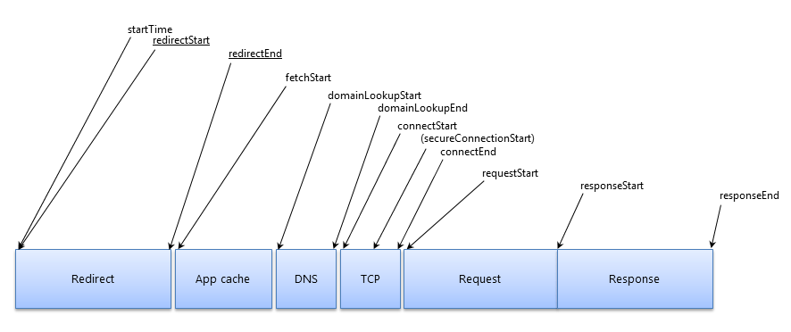
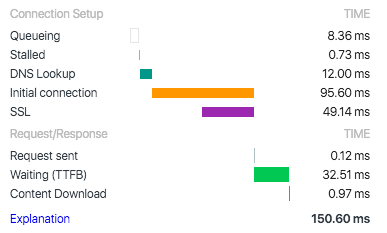
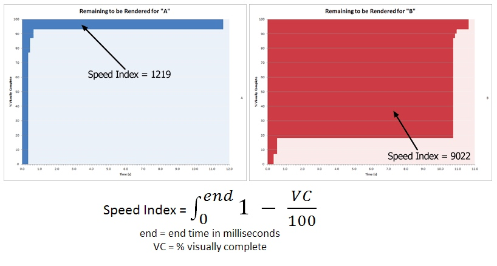

推荐阅读 2018.04
Week 1
1、Don’t use iOS meta tags irresponsibly in your Progressive Web Apps
在iOS safari中并不支持使用manifest.json，取而代之，需要使用apple的meta标签。在一些特定场景下与操作下，iOS Safari与Chrome的差异就体现了出来。注意standlone模式、缓存时间、缓存大小限制等，对此，作者也给出了一些解决思路。
2、了解 Resource Timing
了解 Resource Timing

DevTools中Network部分的看板

Queuing。某个请求正在排队：请求已被渲染引擎推迟，因为该请求的优先级被视为低于关键资源的优先级，图像经常发生这种情况；请求已被暂停，以等待将要释放的不可用 TCP 套接字；请求已被暂停，因为在 HTTP 1 上，浏览器仅允许每个源拥有六个 TCP 连接；生成磁盘缓存条目所用的时间（通常非常迅速）
Stalled/Blocking。请求等待发送所用的时间。可以是等待 Queueing 中介绍的任何一个原因。 此外，此时间包含代理协商所用的任何时间。
Proxy Negotiation。与代理服务器连接协商所用的时间。
DNS Lookup。执行 DNS 查询所用的时间。 页面上的每一个新域都需要完整的往返才能执行 DNS 查询。
Initial Connection / Connecting。建立连接所用的时间，包括 TCP 握手/重试和协商 SSL 的时间。
SSL。完成 SSL 握手所用的时间。
Request Sent / Sending。发出网络请求所用的时间。 通常不到一毫秒。
Waiting (TTFB)。等待初始响应所用的时间，也称为至第一字节的时间。 此时间将捕捉到服务器往返的延迟时间，以及等待服务器传送响应所用的时间。
Content Download / Downloading。接收响应数据所用的时间。
3、饿了么的 PWA 升级实践
从实践角度介绍了如何应用PWA等技术优化Web App
Week 2
1、A Tale of Four Caches
生动地介绍了当你从渲染引擎中发起资源请求时，途径的四类缓存：
memory cache --> service worker cache --> HTTP cache(disk cache) --> Push "cache"(HTTP/2)
2、Caching best practices & max-age gotchas
介绍了使用浏览器缓存（HTTP Cache）的两种推荐模式：Immutable content + long max-age 与 Mutable content, always server-revalidated。以及另一种模式max-age on mutable content中的注意点与危害。同时也提到了Service Worker与HTTP Cache使用错误的危害。简单介绍了如何将Service Worker的Cache与HTTP Cache更好地结合。
3、User-centric Performance Metrics
文章从“确定性能（用户体验）指标”，“在生产环境中测量这些指标”，“解读这些指标的数据”，以及“标准化及防止性能退化”这几个方面进行介绍，非常不错。
4、Using requestIdleCallback
一个非常强大的API——requestIdleCallback，它可以让你添加回调，浏览器会在合适的各个frame的最后调用你的回调，并提供deadline参数（didTimeout和timeRemaining方法），通过它你可以了解每个frame的最后还有多少空闲的事件，并安排你的任务。React 16似乎就使用了这个API来做前端计算任务的切分。
5、Here are three upcoming changes to JavaScript that you’ll love
Optional Chaining
data.user?.address?.streetNullish coalescing
value ?? 'default value'Pipeline operator
let result = "hello" |> doubleSay;
6、离线指南
文章介绍了多种（基于Service Worker和cache API的）离线缓存模式，包括各个模式的应用场景与局限性
7、淘宝新势力周H5性能优化实战
图片懒加载引发的性能问题，及其排查与解决方式
8、Designing very large (JavaScript) applications👍
高屋建瓴，更多其实是在讲如何维护一个超大型项目（进行协作）。很有启发，非常适合每隔一段时间重温一下。（文章作者是AMP技术leader）
9、How JavaScript works: Deep dive into WebSockets and HTTP/2 with SSE + how to pick the right path
介绍了WebSocket，以及两种（WebSocket和SSE+HTTP/2）服务端推技术的介绍与对比
10、Intersection Observer
使用Intersection Observer来检测元素是否进入视野，以此来实现高性能的懒加载。
11、What forces layout / reflow
列举了会导致 layout/reflow 的各种属性与方法
12、Instant Loading Web Apps with an Application Shell Architecture
通过Application Shell架构方法来优化Web App的使用体验与加载性能
13、Best Practices for Using IndexedDB
Not everything can be stored in IndexedDB on all platforms (File & Blob can't be stored on iOS)
Writing to storage may fail (error handler)
Stored data may have been modified or deleted by the user
Stored data may be out of date (new version webapp with old storage)
Storing large, nested objects as a single record may block main thread (performace)
14、Lazy Loading Images and Video👍
对于<img>标签，可以通过判断是否可见的方式来替换src；对于css中的图片资源，可以通过默认设置占位图css来解决
When the document and CSS object models and render tree are built, the browser examines how CSS is applied to a document before requesting external resources. If the browser has determined a CSS rule involving an external resource doesn't apply to the document as it's currently constructed, the browser doesn't request it.
对于<video>，非自动播放可以通过preload和poster来属性来优化；对于GIF的需求也可以通过<video>替换来优化
此外，懒加载时需要注意一些问题：
注意视野范围的判断
注意占位图引起的布局变化
图片解码导致的同步阻塞，建议使用异步API
懒加载失败的错误处理
JavaScript禁用时的处理
15、New <video> Policies for iOS
苹果在video的autoplay政策上进行了一定的放松：可见的、静音的视频允许自动播放（类似GIF）；playsinline属性允许非全屏播放。
Week 3
1、CSS Stacking Context 里那些鲜为人知的坑
本文介绍了stacking context。作为CSS中的一个重要概念，有很多奇怪的“bug”都是由stacking context产生的（z-index、opacity、transform3d）
2、User Timing and Custom Metrics
User Timing是W3C制定的规范之一，包括多个API。其中performance.mark和performance.measure是最为常用的方法。文中介绍了如何通过User Timing来自定义地衡量页面的性能。例如：
- stylesheets done blocking
- scripts done blocking
- fonts loaded
- hero images
- paragraph of text
- Single Page Apps
3、Speed Index
介绍了WebPagetest中的SpeedIndex指标的确定依据、计算方式与遇到的一些问题。
measures how quickly the page contents are visually populated (where lower numbers are better)

4、The Google Analytics Setup I Use on Every Site I Build
介绍了Google Analytics的使用，较为全面。从这篇文章中也可以了解一个前端监控系统的功能与大体设计思路。
5、RFC4122 UUIDS
6、PRPL 模式
- 推送 - 为初始网址路由推送关键资源。
- 渲染 - 渲染初始路由。
- 预缓存 - 预缓存剩余路由。
- 延迟加载 - 延迟加载并按需创建剩余路由。
7、精读《插件化思维》
"做技术设计时，最好先从使用者角度出发，当设计出舒服的调用方式时，再去考虑实现。"文章介绍了插件化的类型、插件的加载与书写方式以及插件的应用场景等。
8、Unity vs SceneKit: which tool you should use to build your ARKit app
对比了使用Unity与使用SceneKit进行AR开发的优势与劣势
9、Common UX Mistakes Made by Business Developers
Recap, Quickrules
- No more than 9 buttons
- Only use drop downs as a last resort
- Give every page a header
- When a page is more than 1 deep, give it breadcrumb
- When in multiple steps, show the steps
- No more than 9 words per line.
- Never use popup in a popup
- Never nest a card in a card
- Keep form fields in a single column
- Have descriptive names for buttons
10、从event loop规范探究javaScript异步及浏览器更新渲染时机
一篇探讨event loop的好文，里面详细讲解了task与micro task的机制；以及和浏览器渲染之间的关系。
11、如何不择手段提升scroll事件的性能👍
文章以scroll监听这一会带来性能问题的经典案例为例子，介绍了如何提高运行时中浏览器的动画、render的性能。
12、分析运行时性能
简述了JavaScript、Style、Layout、Paint和Composite中可能造成性能问题的地方，并提出了一些解决方案。算是对Render Performance的一个精简汇总。